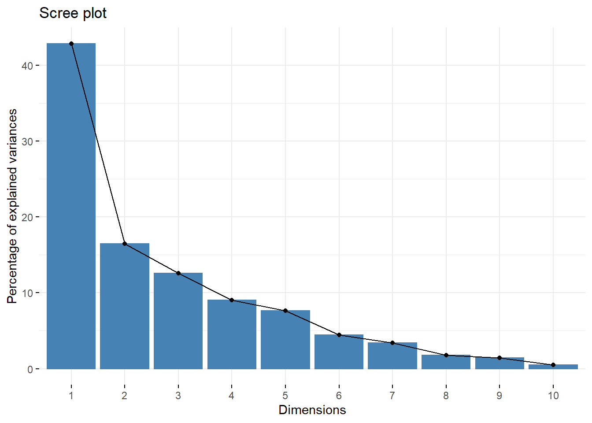
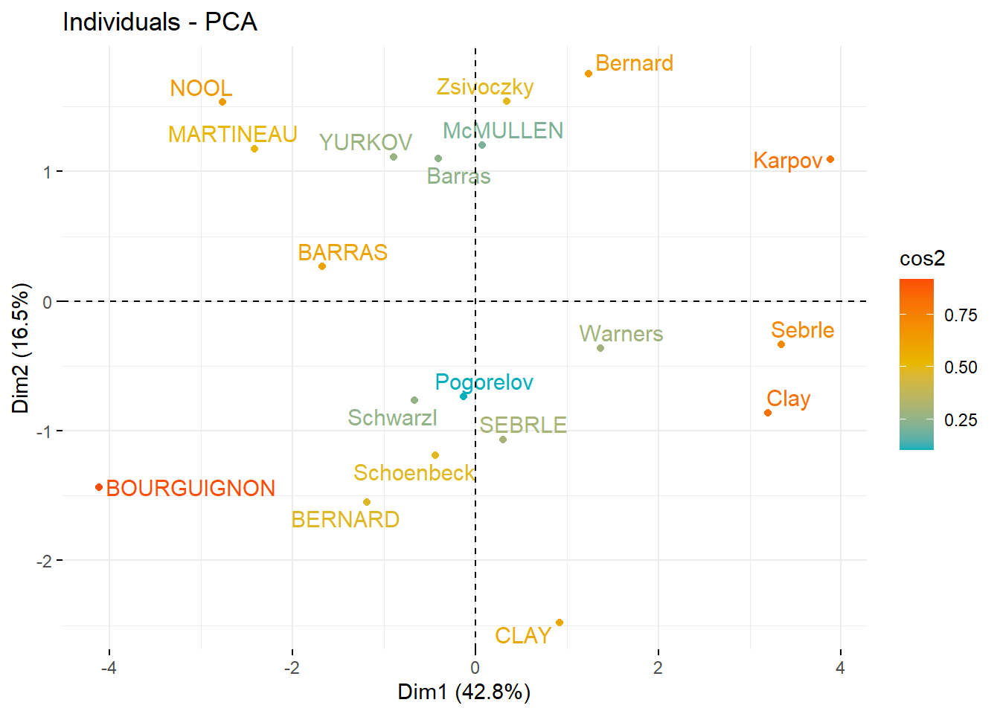
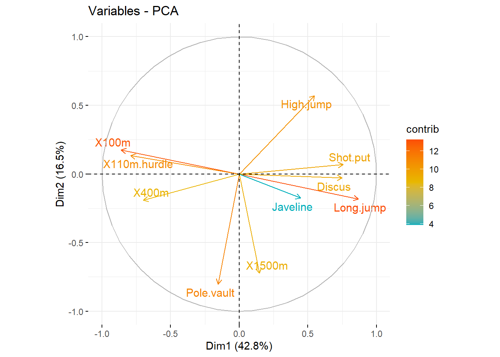

Dimensionality reduction is the transformation of data from a high-dimensional space into a low-dimensional space so that the low-dimensional representation retains some meaningful properties of the original data.
We will use the decathlon2 dataset from the factoextra package to illustrate those algorithms.
library(factoextra)## Loading required package: ggplot2## Welcome! Want to learn more? See two factoextra-related books at https://goo.gl/ve3WBadata("decathlon2")
decathlon <- decathlon2[1:23, 1:10]
head(decathlon[, 1:6])## X100m Long.jump Shot.put High.jump X400m X110m.hurdle
## SEBRLE 11.04 7.58 14.83 2.07 49.81 14.69
## CLAY 10.76 7.40 14.26 1.86 49.37 14.05
## BERNARD 11.02 7.23 14.25 1.92 48.93 14.99
## YURKOV 11.34 7.09 15.19 2.10 50.42 15.31
## ZSIVOCZKY 11.13 7.30 13.48 2.01 48.62 14.17
## McMULLEN 10.83 7.31 13.76 2.13 49.91 14.38We split the dataset in a training set and test set
library(caTools)
set.seed(123)
split = sample.split(decathlon, SplitRatio = 0.8)
training_set = subset(decathlon, split == TRUE)
test_set = subset(decathlon, split == FALSE)res.pca <- prcomp(training_set, scale = TRUE)fviz_eig(res.pca) First dimension explains 45 % of the variance, second 15%.
Similar individuals are grouped together
fviz_pca_ind(res.pca,
col.ind = "cos2", # Colorer par le cos2
gradient.cols = c("#00AFBB", "#E7B800", "#FC4E07"),
repel = TRUE
)
fviz_pca_var(res.pca,
col.var = "contrib",
gradient.cols = c("#00AFBB", "#E7B800", "#FC4E07"),
repel = TRUE
)
ind.sup.coord <- predict(res.pca, newdata = test_set)
ind.sup.coord[, 1:4]## PC1 PC2 PC3 PC4
## ZSIVOCZKY -0.2303648 1.9233251 1.5829833 0.4737560
## HERNU -1.7365873 -0.9923547 -0.1630733 -0.6513918
## Macey 1.6146795 2.6781596 -0.4097257 -0.3656148
## Hernu 0.1584773 1.2364023 0.2210399 1.0621044